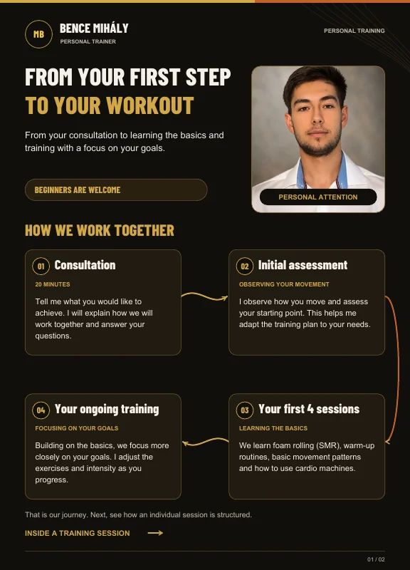
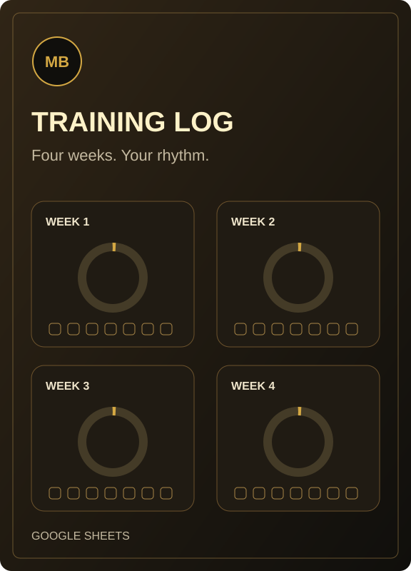

Protein
— g / day
- kcal
- —
- %
- —
- g / kg
- —
- g / lb
- —
Free resources
Try the macro and BMI calculators, or read the personal training guide. Free support at your own pace.
Explore the resources ↓Macro calculator
Enter your weight and choose your settings. The maintenance calorie estimate and macros update immediately.
Diet purpose changes protein only. Calories remain a maintenance estimate, not a fat-loss or muscle-gain target.
— g / day
— g / day
— g / day
Enter your weight to see the estimate.
Based on the supplied Macro-Calculator.xlsx rules: body weight (kg) × 30, plus the selected body-type adjustment, rounded to whole calories. 1 lb = 0.45359237 kg.
Protein uses the selected g/kg rate; fat is 0.8 g/kg. Carbs fill the remaining calories. Protein and carbs use 4 kcal/g and fat 9 kcal/g; percentages show calorie shares. Displayed values are rounded.
This is a simple estimate using custom settings: it does not account for age, sex or activity. Body-type adjustments are not measurements of metabolism; actual maintenance needs can differ.
For general adult use, not a personalised meal plan. Under 18, during pregnancy or breastfeeding, or for a diet related to a health condition, seek appropriate professional guidance. Further guidance (NIDDK) ↗
BMI calculator
Body mass index from your weight and height, with an instant result.
—
Enter your weight and height to see your BMI.
The value is rounded to one decimal; the category uses the unrounded result. The scale shows BMI from 10 to 40.
BMI = weight (kg) / height (m)². Imperial conversion: 1 lb = 0.45359237 kg, 1 inch = 2.54 cm.
The scale shows general adult ranges, not a diagnosis or a personal target weight. Health risks associated with some ethnic backgrounds can occur at lower BMI values; this simple calculator does not make that individual assessment.
People under 18 need a different assessment. Do not use this calculator during pregnancy, with a known or suspected eating disorder, or with a condition affecting height; seek appropriate professional guidance.
Downloads
Download the guide or make your own editable copy of the training log. Both are free.

Available now · free
From your consultation and first sessions to the structure of a full workout. A short, illustrated guide to what you can expect when we start working together.
Read it whenever you like. No sign-up needed.

Available now · free
See the work you put in, week by week. Set your weekly goal, tick a box after each session, and watch your progress on the rings. A separate exercise log and worked example help you get started.
Once open, choose File → Make a copy. Your editable copy goes into your own Google Drive; a Google account is required. The shared template is read-only.
For the location and what to bring, visit the first-session page.
What happens at your first session? →